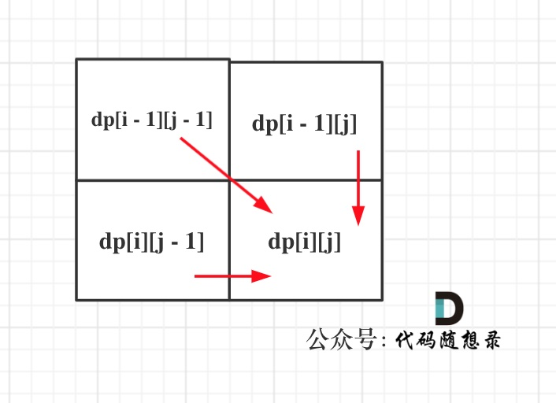
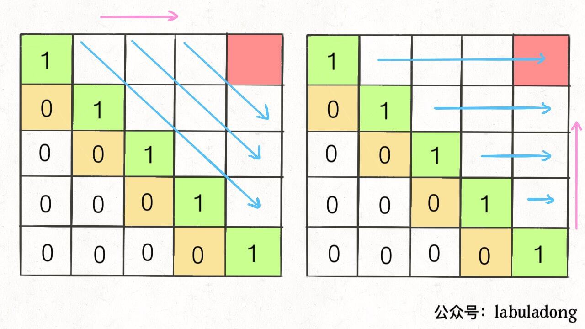

1. 基础问题
509. 斐波那契数
斐波那契数 （通常用 F(n) 表示）形成的序列称为 斐波那契数列 。该数列由 0 和 1 开始，后面的每一项数字都是前面两项数字的和。也就是：
F(0) = 0，F(1) = 1
F(n) = F(n - 1) + F(n - 2)，其中 n > 1给定 n ，请计算 F(n) 。
输入：n = 2
输出：1
解释：F(2) = F(1) + F(0) = 1 + 0 = 1解题：
要用一个一维dp数组来保存递归的结果
==动规五部曲：==
- 确定dp数组以及下标的含义
dp[i]的定义为：第i个数的斐波那契数值是dp[i]
- 确定递推公式
题目已经把递推公式直接给我们了：状态转移方程 dp[i] = dp[i - 1] + dp[i - 2];
- dp数组如何初始化
题目中把如何初始化也直接给我们了，如下：
dp[0] = 0;
dp[1] = 1;- 确定遍历顺序
从递归公式dp[i] = dp[i - 1] + dp[i - 2] 中可以看出，dp[i]是依赖 dp[i - 1] 和 dp[i - 2]，那么遍历的顺序一定是从前到后遍历的
- 举例推导dp数组
按照这个递推公式dp[i] = dp[i - 1] + dp[i - 2]，我们来推导一下，当N为10的时候，dp数组应该是如下的数列：
0 1 1 2 3 5 8 13 21 34 55
如果代码写出来，发现结果不对，就把dp数组打印出来看看和我们推导的数列是不是一致的。
class Solution {
public int fib(int n) {
//特殊情况直接返回，节省时间
if (n <= 1) return n;
int[] dp = new int[n + 1];
dp[0] = 0;
dp[1] = 1;
for (int i = 2; i <= n; i++) {
dp[i] = dp[i - 1] + dp[i - 2];
}
return dp[n];
}
}70. 爬楼梯
假设你正在爬楼梯。需要 n 阶你才能到达楼顶。
每次你可以爬 1 或 2 个台阶。你有多少种不同的方法可以爬到楼顶呢？
输入：n = 3
输出：3
解释：有三种方法可以爬到楼顶。
1. 1 阶 + 1 阶 + 1 阶
2. 1 阶 + 2 阶
3. 2 阶 + 1 阶解题：
爬到第一层楼梯有一种方法，爬到二层楼梯有两种方法。
那么第一层楼梯再跨两步就到第三层 ，第二层楼梯再跨一步就到第三层。
所以到第三层楼梯的状态可以由第二层楼梯 和 到第一层楼梯状态推导出来，那么就可以想到动态规划了。
- 确定dp数组以及下标的含义
dp[i]： 爬到第i层楼梯，有dp[i]种方法
- 确定递推公式
从dp[i]的定义可以看出，dp[i] 可以有两个方向推出来。
首先是dp[i - 1]，上i-1层楼梯，有dp[i - 1]种方法，那么再一步跳一个台阶不就是dp[i]了么。
还有就是dp[i - 2]，上i-2层楼梯，有dp[i - 2]种方法，那么再一步跳两个台阶不就是dp[i]了么。
所以dp[i] = dp[i - 1] + dp[i - 2] 。
- dp数组如何初始化
dp[1] = 1，dp[2] = 2
- 确定遍历顺序
从递推公式dp[i] = dp[i - 1] + dp[i - 2];中可以看出，遍历顺序一定是从前向后遍历的
- 举例推导dp数组
举例当n为5的时候，dp table（dp数组）应该是这样的

class Solution {
public int climbStairs(int n) {
if (n <= 2) return n;
int[] dp = new int[n + 1];
dp[1] = 1;
dp[2] = 2;
for (int i = 3; i <= n; i++) {
dp[i] = dp[i - 1] + dp[i - 2];
}
return dp[n];
}
}746. 使用最小花费爬楼梯
给你一个整数数组 cost ，其中 cost[i] 是从楼梯第 i 个台阶向上爬需要支付的费用。一旦你支付此费用，即可选择向上爬一个或者两个台阶。
你可以选择从下标为 0 或下标为 1 的台阶开始爬楼梯。
请你计算并返回达到楼梯顶部的最低花费。
输入：cost = [1,100,1,1,1,100,1,1,100,1]
输出：6
解释：你将从下标为 0 的台阶开始。
- 支付 1 ，向上爬两个台阶，到达下标为 2 的台阶。
- 支付 1 ，向上爬两个台阶，到达下标为 4 的台阶。
- 支付 1 ，向上爬两个台阶，到达下标为 6 的台阶。
- 支付 1 ，向上爬一个台阶，到达下标为 7 的台阶。
- 支付 1 ，向上爬两个台阶，到达下标为 9 的台阶。
- 支付 1 ，向上爬一个台阶，到达楼梯顶部。
总花费为 6 。解题：
**dp[i]的定义：到达第i台阶所花费的最少体力为dp[i]**。
**可以有两个途径得到dp[i]，一个是dp[i-1] 一个是dp[i-2]**。dp[i - 1] 跳到 dp[i] 需要花费 dp[i - 1] + cost[i - 1]。dp[i - 2] 跳到 dp[i] 需要花费 dp[i - 2] + cost[i - 2]。选起跳点一定是选最小的，所以dp[i] = min(dp[i - 1] + cost[i - 1], dp[i - 2] + cost[i - 2]);
只初始化dp[0]和dp[1]就够了，其他的最终都是dp[0]dp[1]推出。dp[0] = 0，dp[1] = 0
从前到后遍历cost数组
拿示例2：cost = [1, 100, 1, 1, 1, 100, 1, 1, 100, 1] ，来模拟一下dp数组的状态变化，如下：

class Solution {
public int minCostClimbingStairs(int[] cost) {
int[] dp = new int[cost.length + 1];
dp[0] = 0;
dp[1] = 0;
for (int i = 2; i <= cost.length; i++) {
dp[i] = Math.min(dp[i - 1] + cost[i - 1], dp[i - 2] + cost[i - 2]);
}
return dp[cost.length];
}
}118. 杨辉三角
给定一个非负整数 numRows，生成「杨辉三角」的前 numRows 行。
在「杨辉三角」中，每个数是它左上方和右上方的数的和。

输入: numRows = 5
输出: [[1],[1,1],[1,2,1],[1,3,3,1],[1,4,6,4,1]]解题：
class Solution {
public List<List<Integer>> generate(int numRows) {
List<List<Integer>> res = new ArrayList<>();
for (int i = 0; i < numRows; i++) {
List<Integer> row = new ArrayList<>();
for (int j = 0; j <= i; j++) {
if (j == 0 || j == i) {
row.add(1);
} else {
row.add(res.get(i - 1).get(j - 1) + res.get(i - 1).get(j));
}
}
res.add(row);
}
return res;
}
}62. 不同路径
一个机器人位于一个 m x n 网格的左上角 （起始点在下图中标记为 “Start” ）。
机器人每次只能向下或者向右移动一步。机器人试图达到网格的右下角（在下图中标记为 “Finish” ）。
问总共有多少条不同的路径？
1 <= m, n <= 100
输入：m = 3, n = 2
输出：3
解释：
从左上角开始，总共有 3 条路径可以到达右下角。
1. 向右 -> 向下 -> 向下
2. 向下 -> 向下 -> 向右
3. 向下 -> 向右 -> 向下解题：
- 确定dp数组以及下标的含义
dp[i][j] ：表示从（0 ，0）出发，到(i, j) 有dp[i][j]条不同的路径。
- 确定递推公式
想要求dp[i][j]，只能有两个方向来推导出来，即dp[i - 1][j] 和 dp[i][j - 1]。
那么很自然，dp[i][j] = dp[i - 1][j] + dp[i][j - 1]，因为dp[i][j]只有这两个方向过来。
- dp数组的初始化
如何初始化呢，首先dp[i][0]一定都是1，因为从(0, 0)的位置到(i, 0)的路径只有一条，那么dp[0][j]也同理
- 确定遍历顺序
从左至右、从上至下。
- 举例推导dp数组

class Solution {
public int uniquePaths(int m, int n) {
int[][] dp = new int[m][n];
for (int i = 0; i < m; i++) dp[i][0] = 1;
for (int j = 0; j < n; j++) dp[0][j] = 1;
for (int i = 1; i < m; i++) {
for (int j = 1; j < n; j++) {
dp[i][j] = dp[i - 1][j] + dp[i][j - 1];
}
}
return dp[m - 1][n - 1];
}
}63. 不同路径 II
一个机器人位于一个 m x n 网格的左上角 （起始点在下图中标记为 “Start” ）。
机器人每次只能向下或者向右移动一步。机器人试图达到网格的右下角（在下图中标记为 “Finish”）。
现在考虑网格中有障碍物。那么从左上角到右下角将会有多少条不同的路径？
网格中的障碍物和空位置分别用 1 和 0 来表示。

输入：obstacleGrid = [[0,0,0],[0,1,0],[0,0,0]]
输出：2
解释：3x3 网格的正中间有一个障碍物。
从左上角到右下角一共有 2 条不同的路径：
1. 向右 -> 向右 -> 向下 -> 向下
2. 向下 -> 向下 -> 向右 -> 向右解题：
- dp数组如何初始化
因为从(0, 0)的位置到(i, 0)的路径只有一条，所以dp[i][0]一定为1，dp[0][j]也同理。
但如果(i, 0) 这条边有了障碍之后，障碍之后（包括障碍）都是走不到的位置了，所以障碍之后的dp[i][0]应该还是初始值0。

下标(0, j)的初始化情况同理。
class Solution {
public int uniquePathsWithObstacles(int[][] obstacleGrid) {
int m = obstacleGrid.length;
int n = obstacleGrid[0].length;
int[][] dp = new int[m][n];
//如果在起点或终点出现了障碍，直接返回0
if (obstacleGrid[m - 1][n - 1] == 1 || obstacleGrid[0][0] == 1) {
return 0;
}
//初始化
for (int i = 0; i < m && obstacleGrid[i][0] == 0; i++) {
dp[i][0] = 1;
}
for (int j = 0; j < n && obstacleGrid[0][j] == 0; j++) {
dp[0][j] = 1;
}
for (int i = 1; i < m; i++) {
for (int j = 1; j < n; j++) {
if (obstacleGrid[i][j] == 1) {
dp[i][j] = 0;
} else {
dp[i][j] = dp[i - 1][j] + dp[i][j - 1];
}
}
}
return dp[m -1][n -1];
}
}64. 最小路径和
给定一个包含非负整数的 m x n 网格 grid ，请找出一条从左上角到右下角的路径，使得路径上的数字总和为最小。
说明：每次只能向下或者向右移动一步。

输入：grid = [[1,3,1],[1,5,1],[4,2,1]]
输出：7
解释：因为路径 1→3→1→1→1 的总和最小。解题：
dp[i][j]为 (0, 0) 到 (i, j) 位置的最小路径和- 遍历一定是从左上到右下
class Solution {
public int minPathSum(int[][] grid) {
int m = grid.length;
int n = grid[0].length;
int[][] dp = new int[m][n];
for (int i = 0; i < m; i++) {
for (int j = 0; j < n; j++) {
if (i - 1 < 0 && j - 1 < 0) {
dp[0][0] = grid[0][0]; // 特殊情况初始化
} else if (i - 1 < 0) {
dp[i][j] = dp[i][j - 1] + grid[i][j]; // 在第一排
} else if (j - 1 < 0) {
dp[i][j] = dp[i - 1][j] + grid[i][j]; // 在第一列
} else {
dp[i][j] = Math.min(dp[i][j - 1], dp[i - 1][j]) + grid[i][j];
}
}
}
return dp[m - 1][n - 1];
}
}343. 整数拆分
给定一个正整数 n ，将其拆分为 k 个 正整数 的和（ k >= 2 ），并使这些整数的乘积最大化。
返回 你可以获得的最大乘积 。
输入: n = 10
输出: 36
解释: 10 = 3 + 3 + 4, 3 × 3 × 4 = 36。解题：
- 确定dp数组（dp table）以及下标的含义
dp[i]：分拆数字i，可以得到的最大乘积为dp[i]。
- 确定递推公式
可以从1遍历j，然后有两种渠道得到dp[i]：
一个是j * (i - j) 直接相乘。
一个是j * dp[i - j]，相当于是拆分(i - j)。
那有同学问了，j怎么就不拆分呢？
j是从1开始遍历，拆分j的情况，在遍历j的过程中其实都计算过了。那么从1遍历j，比较(i - j) * j和dp[i - j] * j 取最大的。递推公式：dp[i] = max(dp[i], max((i - j) * j, dp[i - j] * j));
也可以这么理解，j * (i - j) 是单纯的把整数拆分为两个数相乘，而j * dp[i - j]是拆分成两个以上的个数相乘。
- dp的初始化
dp[2] = 1
- 确定遍历顺序
从前向后
- 举例推导dp数组
举例当n为10 的时候，dp数组里的数值，如下：

class Solution {
public int integerBreak(int n) {
//dp[i] 为正整数 i 拆分后的结果的最大乘积
int[] dp = new int[n+1];
dp[2] = 1;
//在本题中，我们分析 dp[0], dp[1]都是无意义的
for(int i = 3; i <= n; i++) {
for(int j = 1; j <= i-j; j++) {
// 这里的 j 其实最大值为 i-j,后面再大得到的乘积是一样的
dp[i] = Math.max(dp[i], Math.max(j*(i-j), j*dp[i-j]));
// j * (i - j) 是单纯的把整数 i 拆分为两个数 也就是 i,i-j ，再相乘
//而j * dp[i - j]是将 i-j 再拆分成两个以及两个以上(k>=2)的个数,再相乘。
}
}
return dp[n];
}
}96. 不同的二叉搜索树
给你一个整数 n ，求恰由 n 个节点组成且节点值从 1 到 n 互不相同的 二叉搜索树 有多少种？返回满足题意的二叉搜索树的种数。

输入：n = 3
输出：5解题：


来看看n为3的时候，有哪几种情况。
当1为头结点的时候，其右子树有两个节点，看这两个节点的布局，是不是和 n 为2的时候两棵树的布局是一样的啊！（可能有同学问了，这布局不一样啊，节点数值都不一样。别忘了我们就是求不同树的数量，并不用把搜索树都列出来，所以不用关心其具体数值的差异）
当3为头结点的时候，其左子树有两个节点，看这两个节点的布局，是不是和n为2的时候两棵树的布局也是一样的啊！
当2为头结点的时候，其左右子树都只有一个节点，布局是不是和n为1的时候只有一棵树的布局也是一样的啊！
发现到这里，其实我们就找到了重叠子问题了，其实也就是发现可以通过dp[1] 和 dp[2] 来推导出来dp[3]的某种方式。
dp[3]，就是 元素1为头结点搜索树的数量 + 元素2为头结点搜索树的数量 + 元素3为头结点搜索树的数量：
元素1为头结点搜索树的数量 = 右子树有2个元素的搜索树数量 * 左子树有0个元素的搜索树数量元素2为头结点搜索树的数量 = 右子树有1个元素的搜索树数量 * 左子树有1个元素的搜索树数量元素3为头结点搜索树的数量 = 右子树有0个元素的搜索树数量 * 左子树有2个元素的搜索树数量
所以dp[3] = dp[2] * dp[0] + dp[1] * dp[1] + dp[0] * dp[2]
如图所示：

- 确定dp数组（dp table）以及下标的含义
dp[i]：由 i 个节点，可以构成 dp[i] 种二叉搜索树
- 确定递推公式
dp[i] += dp[j - 1] * dp[i - j]
j 是头结点的元素，从1遍历到i为止。j-1 为 j 为头结点左子树节点数量，i-j 为以 j 为头结点右子树节点数量
- dp数组如何初始化
dp[0] = 1，空节点也是一棵二叉树
- 确定遍历顺序
遍历i里面每一个数作为头结点的状态，用j来遍历。
class Solution {
public int numTrees(int n) {
int[] dp = new int[n + 1];
dp[0] = 1;
for (int i = 1; i <= n; i++) {
for (int j = 1; j <= i; j++) {
dp[i] += dp[j - 1] * dp[i - j];
}
}
return dp[n];
}
}2. 背包问题
0-1背包
有n件物品和一个最多能背重量为w 的背包。第i件物品的重量是weight[i]，得到的价值是value[i] 。每件物品只能用一次，求解将哪些物品装入背包里物品价值总和最大。
背包最大重量为4。
物品为：
| | 重量 | 价值 |
| 物品0 | 1 | 15 |
| 物品1 | 3 | 20 |
| 物品2 | 4 | 30 |
背包能背的物品最大价值是35。解题：
- 确定dp数组以及下标的含义
对于背包问题，有一种写法， 是使用二维数组，即**dp[i][j] 表示从下标为[0-i]的物品里任意取，放进重量为j的背包，价值总和最大是多少**。
- 确定递推公式
可以有两个方向推出来dp[i][j]，
- 不放物品i：
dp[i - 1][j]。即背包重量为j，里面不放物品i的最大价值，此时dp[i][j]就是dp[i - 1][j]。(其实就是当物品i的重量大于背包j的重量时，物品i无法放进背包中，所以背包内的价值依然和前面相同。) - 放物品i：
dp[i - 1][j - weight[i]]。dp[i - 1][j - weight[i]]为背包重量为j - weight[i]的时候不放物品i的最大价值，那么dp[i - 1][j - weight[i]] + value[i]（物品i的价值），就是背包放物品i得到的最大价值
所以递归公式： dp[i][j] = max(dp[i - 1][j], dp[i - 1][j - weight[i]] + value[i]);
- dp数组如何初始化
背包重量j为0的话，即dp[i][0]，无论是选取哪些物品，背包价值总和一定为0
dp[0][j]，即：i为0，存放编号0的物品的时候，各个重量的背包所能存放的最大价值。
那么很明显当 j < weight[0]的时候，dp[0][j] 应该是 0，因为背包重量比编号0的物品重量还小。
当j >= weight[0]时，dp[0][j] 应该是value[0]，因为背包重量放足够放编号0物品。
for (int j = 0 ; j < weight[0]; j++) { // 当然这一步，如果把dp数组预先初始化为0了，这一步就可以省略
dp[0][j] = 0;
}
// 正序遍历
for (int j = weight[0]; j <= bagweight; j++) {
dp[0][j] = value[0];
}
一开始就统一把dp数组统一初始为0

- 确定遍历顺序
在如下图中，可以看出，有两个遍历的维度：物品与背包重量
先遍历物品，然后遍历背包重量（其实都可以，因为都是左上角开始）
public class BagProblem {
public static void main(String[] args) {
int[] weight = {1,3,4};
int[] value = {15,20,30};
int bagSize = 4;
testWeightBagProblem(weight,value,bagSize);
}
/**
* 动态规划获得结果
* @param weight 物品的重量
* @param value 物品的价值
* @param bagSize 背包的重量
*/
public static void testWeightBagProblem(int[] weight, int[] value, int bagSize){
// 创建dp数组
int goods = weight.length; // 获取物品的数量
int[][] dp = new int[goods][bagSize + 1];
// 初始化dp数组
// 创建数组后，其中默认的值就是0
for (int j = weight[0]; j <= bagSize; j++) {
dp[0][j] = value[0];
}
// 填充dp数组
for (int i = 1; i < weight.length; i++) {
for (int j = 1; j <= bagSize; j++) {
if (j < weight[i]) {
/**
* 当前背包的重量都没有当前物品i大的时候，是不放物品i的
* 那么前i-1个物品能放下的最大价值就是当前情况的最大价值
*/
dp[i][j] = dp[i-1][j];
} else {
/**
* 当前背包的重量可以放下物品i
* 那么此时分两种情况：
* 1、不放物品i
* 2、放物品i
* 比较这两种情况下，哪种背包中物品的最大价值最大
*/
dp[i][j] = Math.max(dp[i-1][j] , dp[i-1][j-weight[i]] + value[i]);
}
}
}
// 打印dp数组
for (int i = 0; i < goods; i++) {
for (int j = 0; j <= bagSize; j++) {
System.out.print(dp[i][j] + "\t");
}
System.out.println("\n");
}
}
}优化
在使用二维数组的时候，递推公式：dp[i][j] = max(dp[i - 1][j], dp[i - 1][j - weight[i]] + value[i]);
其实可以发现，递推公式只依赖上一层的状态。因为可以只维护两层，不断覆盖。如果把dp[i - 1]那一层拷贝到dp[i]上，表达式完全可以是：dp[i][j] = max(dp[i][j], dp[i][j - weight[i]] + value[i]);
- 确定dp数组的定义
在一维dp数组中，dp[j]表示：重量为j的背包，所背的物品价值可以最大为dp[j]。
- 一维dp数组的递推公式
此时dp[j]有两个选择：一个是不放物品i，取自己dp[j] 相当于 二维dp数组中的dp[i-1][j]；一个是放物品i，取dp[j - weight[i]] + value[i]
所以递归公式为：dp[j] = max(dp[j], dp[j - weight[i]] + value[i]);
- 一维dp数组如何初始化
dp[0] = 0，其他下标都初始化为0。即dp数组初始化时都为0
- 一维dp数组遍历顺序
for(int i = 0; i < weight.size(); i++) { // 先遍历物品，确定物品范围
for(int j = bagWeight; j >= weight[i]; j--) { // 再倒序遍历背包重量
dp[j] = max(dp[j], dp[j - weight[i]] + value[i]);
}
}- 倒序遍历
一维数组倒序遍历是为了保证物品i只被放入一次。
如：第二行的dp[4]=max(dp[4], dp[4-weight[1]]+value[1])=max(dp[4],dp[1]+20)。相当于dp[1][4]=max(dp[0][4],dp[0][1]+20)
如果正序遍历，则此时的dp[1]不能取到dp[0][1]的值而是dp[1][1]的值
倒序可以取得。
对于二维dp，dp[i][j]都是通过上一层即dp[i - 1][j]计算而来，本层的dp[i][j]并不会被覆盖。
- 先遍历物品再遍历背包重量
因为一维dp的写法，背包重量一定是要倒序遍历。因此需先遍历物品
如：第二行的dp[4]=max(dp[4], dp[4-weight[1]]+value[1])=max(dp[4],dp[1]+20)。其中此时的dp[4]相当于dp[0][4]，dp[1]相当于dp[0][1]，即相当于把第一行的值拷贝用到第二行

public static void main(String[] args) {
int[] weight = {1, 3, 4};
int[] value = {15, 20, 30};
int bagWight = 4;
testWeightBagProblem(weight, value, bagWight);
}
public static void testWeightBagProblem(int[] weight, int[] value, int bagWeight){
int wLen = weight.length;
//定义dp数组：dp[j]表示背包重量为j时，能获得的最大价值
int[] dp = new int[bagWeight + 1];
//遍历顺序：先遍历物品，再遍历背包重量
for (int i = 0; i < wLen; i++){
for (int j = bagWeight; j >= weight[i]; j--){
dp[j] = Math.max(dp[j], dp[j - weight[i]] + value[i]);
}
}
//打印dp数组
for (int j = 0; j <= bagWeight; j++){
System.out.print(dp[j] + " ");
}
}416. 分割等和子集
给你一个 只包含正整数 的 非空 数组 nums 。请你判断是否可以将这个数组分割成两个子集，使得两个子集的元素和相等。
输入：nums = [1,5,11,5]
输出：true
解释：数组可以分割成 [1, 5, 5] 和 [11] 。解题：
问题转化：给一个可装载重量为 sum / 2 的背包和 N 个物品，每个物品的重量为 nums[i]。现在让你装物品，是否存在一种装法，能够==恰好==将背包装满（==0-1背包问题是求尽量装满后的背包价值==）
- 背包的重量为sum / 2
- 背包中每一个元素是不可重复放入
- dp[j]表示 重量为j的背包，若dp[j]为true，则说明可以恰好将背包装满。
- 递推公式：
dp[j] = dp[j] || dp[j - nums[i]]
class Solution {
public boolean canPartition(int[] nums) {
if(nums == null || nums.length == 0) return false;
int sum = 0;
for(int num : nums) {
sum += num;
}
//总和为奇数，不能平分
if(sum % 2 != 0) return false;
int target = sum >> 1;
int[] dp = new int[target + 1];
dp[0] = true;
for(int i = 0; i < nums.length; i++) {
for(int j = target; j >= nums[i]; j--) {
dp[j] = dp[j] || dp[j - nums[i]];
}
}
return dp[target];
}
}1049. 最后一块石头的重量 II
有一堆石头，用整数数组 stones 表示。其中 stones[i] 表示第 i 块石头的重量。
每一回合，从中选出任意两块石头，然后将它们一起粉碎。假设石头的重量分别为 x 和 y，且 x <= y。那么粉碎的可能结果如下：
- 如果
x == y，那么两块石头都会被完全粉碎； - 如果
x != y，那么重量为x的石头将会完全粉碎，而重量为y的石头新重量为y-x。
最后，最多只会剩下一块 石头。返回此石头 最小的可能重量 。如果没有石头剩下，就返回 0。
输入：stones = [2,7,4,1,8,1]
输出：1
解释：
组合 2 和 4，得到 2，所以数组转化为 [2,7,1,8,1]，
组合 7 和 8，得到 1，所以数组转化为 [2,1,1,1]，
组合 2 和 1，得到 1，所以数组转化为 [1,1,1]，
组合 1 和 1，得到 0，所以数组转化为 [1]，这就是最优值。解题：
二分：==尽量==让石头分成重量相同的两堆，相撞之后剩下的石头最小，这样就化解成01背包问题了。
问题转化：给一个可装载重量为 sum / 2 的背包和 N 个物品，每个物品的重量为 stones[i]。现在让你装物品，==尽量==将背包装满（价值等于重量，因此等效于使背包价值最大）
- 本题物品的重量为stones[i]，物品的价值也为stones[i]。
- **dp[j]表示重量为j的背包，最多可以装最大重量为dp[j]**。
- 那么分成两堆石头，一堆石头的总重量是dp[target]，另一堆就是sum - dp[target]。
- 在计算target的时候，target = sum / 2 因为是向下取整，所以sum - dp[target] 一定是大于等于dp[target]的。
- 那么相撞之后剩下的最小石头重量就是
(sum - dp[target]) - dp[target]。
class Solution {
public int lastStoneWeightII(int[] stones) {
int sum = 0;
for (int i : stones) {
sum += i;
}
int target = sum >> 1;
//初始化dp数组
int[] dp = new int[target + 1];
for (int i = 0; i < stones.length; i++) {
//采用倒序
for (int j = target; j >= stones[i]; j--) {
//两种情况，要么放，要么不放
dp[j] = Math.max(dp[j], dp[j - stones[i]] + stones[i]);
}
}
return sum - 2 * dp[target];
}
}494. 目标和
给你一个非负整数数组 nums 和一个整数 target 。
向数组中的每个整数前添加 '+' 或 '-' ，然后串联起所有整数，可以构造一个 表达式 ：
- 例如，
nums = [2, 1]，可以在2之前添加'+'，在1之前添加'-'，然后串联起来得到表达式"+2-1"。
返回可以通过上述方法构造的、运算结果等于 target 的不同 表达式 的数目。
输入：nums = [1,1,1,1,1], target = 3
输出：5
解释：一共有 5 种方法让最终目标和为 3 。
-1 + 1 + 1 + 1 + 1 = 3
+1 - 1 + 1 + 1 + 1 = 3
+1 + 1 - 1 + 1 + 1 = 3
+1 + 1 + 1 - 1 + 1 = 3
+1 + 1 + 1 + 1 - 1 = 3解题：
二分：假设加法的总和为x，那么减法对应的总和就是sum - x。
所以我们要求的是 x - (sum - x) = target 即 x = (target + sum) / 2
此时问题就转化为，装满限重量为x的背包，有几种方法。
- 确定dp数组以及下标的含义
dp[j] 表示：填满j重量的包，有dp[j]种方法
- 确定递推公式
只要搞到nums[i]，凑成dp[j]就有dp[j - nums[i]] 种方法。
例如：dp[j]，j 为5，
- 已经有一个1（nums[i]） 的话，有 dp[4]种方法 凑成 容量为5的背包。
- 已经有一个2（nums[i]） 的话，有 dp[3]种方法 凑成 容量为5的背包。
- 已经有一个3（nums[i]） 的话，有 dp[2]中方法 凑成 容量为5的背包
- 已经有一个4（nums[i]） 的话，有 dp[1]中方法 凑成 容量为5的背包
- 已经有一个5 （nums[i]）的话，有 dp[0]中方法 凑成 容量为5的背包
那么凑整dp[5]有多少方法呢，也就是把 所有的 dp[j - nums[i]] 累加起来。
所以求组合类问题的公式，都是类似这种：
dp[j] += dp[j - nums[i]]也可以这样理解：
1、如果不选第i个数（nums[i]）的话，则方法数为dp[j]；
2、如果选第i个数（nums[i]）的话，则方法数为dp[j - nums[i]]； 所以方法总数为：dp[j] = dp[j] + dp[j - nums[i]]；（感觉这样拆开写比较容易理解） 可以对比其他01背包问题：dp[j] = max(dp[j], dp[j - nums[i]])，这种问题即是从选i与不选i里，选取最大值。
class Solution {
public int findTargetSumWays(int[] nums, int target) {
// 和之前遇到的背包问题不一样，之前都是求容量为j的背包，最多能装多少。
// 本题则是装满有几种方法。也就是一个组合问题了。
int sum = 0; // 记录整个nums数组的总和
for (int num : nums) sum += num; // 遍历累加
// 排除错误情况
// 1、sum + target = 2 * left 必然为偶数
// 2、如果sum已经比target小了，也就是所有组合的最大值比target小了，那也是不能实现的
// 注意！这里，如果sum = 100, target = -200, 也是没有组合的
if ((sum + target) % 2 != 0 || sum < Math.abs(target)) return 0;
// 设置背包大小
int bagWeight = (sum + target) / 2;
int[] dp = new int[bagWeight + 1];
// 初始化dp数组
// j = 0, 意味着此时 sum + target = 0, 只有一种，就是全是-（要想使x = (target + sum) / 2 = 0 有1种方法）
dp[0] = 1;
// 遍历物品
for (int i = 0; i < nums.length; ++i) {
// 遍历背包
for (int j = bagWeight; j >= nums[i]; --j) {
dp[j] += dp[j - nums[i]];
}
}
return dp[bagWeight];
}
}474. 一和零
给你一个二进制字符串数组 strs 和两个整数 m 和 n 。
请你找出并返回 strs 的最大子集的长度，该子集中 最多 有 m 个 0 和 n 个 1 。
如果 x 的所有元素也是 y 的元素，集合 x 是集合 y 的 子集 。
输入：strs = ["10", "0001", "111001", "1", "0"], m = 5, n = 3
输出：4
解释：最多有 5 个 0 和 3 个 1 的最大子集是 {"10","0001","1","0"} ，因此答案是 4 。
其他满足题意但较小的子集包括 {"0001","1"} 和 {"10","1","0"} 。{"111001"} 不满足题意，因为它含 4 个 1 ，大于 n 的值 3 。解题：
- 确定dp数组（dp table）以及下标的含义
**dp[i][j]：最多有i个0和j个1的strs的最大子集的大小为dp[i][j]**。（仍然是一维数组，只是背包重量有两个维度）
即重量为i个0和j个1的背包，可以装得下的最大价值（每个字符串价值视为1）
- 确定递推公式
dp[i][j] = max(dp[i][j], dp[i - zeroNum][j - oneNum] + 1)
- 初始化
因为物品价值不会是负数，初始dp数组为0，保证递推的时候dp[i][j]不会被初始值覆盖。
class Solution {
public int findMaxForm(String[] strs, int m, int n) {
int[][] dp = new int[m + 1][n + 1];
// 先遍历物品
for (String str : strs) {
int zero = 0;
int one = 0;
for (char c : str.toCharArray()) {
if (c == '0') {
zero++;
} else {
one++;
}
}
// 再遍历背包重量
for (int i = m; i >= zero; i--) {
for (int j = n; j >= one; j--) {
dp[i][j] = Math.max(dp[i][j], dp[i - zero][j - one] + 1);
}
}
}
return dp[m][n];
}
}完全背包
每件商品都有无限个！
物品为：
| | 重量 | 价值 |
| ----- | ---- | ---- |
| 物品0 | 1 | 15 |
| 物品1 | 3 | 20 |
| 物品2 | 4 | 30 |
背包最大重量为4，问背包能背的物品最大价值是多少?解题：
01背包内嵌的循环是从大到小遍历，为了保证每个物品仅被添加一次。而完全背包的物品是可以添加多次的，所以要从小到大去遍历
在完全背包中，对于一维dp数组来说，其实两个for循环嵌套顺序是无所谓的！
因为dp[j]是根据下标j之前所对应的dp[j]计算出来的。 只要保证下标j之前的dp[j]都是已计算的就可以了。
遍历物品在外层循环，遍历背包重量在内层循环，状态如图：

遍历背包重量在外层循环，遍历物品在内层循环，状态如图：

//先遍历物品，再遍历背包
private static void testCompletePack(){
int[] weight = {1, 3, 4};
int[] value = {15, 20, 30};
int bagWeight = 4;
int[] dp = new int[bagWeight + 1];
for (int i = 0; i < weight.length; i++){ // 遍历物品
for (int j = weight[i]; j <= bagWeight; j++){ // 遍历背包容量
dp[j] = Math.max(dp[j], dp[j - weight[i]] + value[i]);
}
}
for (int maxValue : dp){
System.out.println(maxValue + " ");
}
}518. 零钱兑换 II
给你一个整数数组 coins 表示不同面额的硬币，另给一个整数 amount 表示总金额。
请你计算并返回可以凑成总金额的硬币组合数。如果任何硬币组合都无法凑出总金额，返回 0 。
假设每一种面额的硬币有无限个。
题目数据保证结果符合 32 位带符号整数。
输入：amount = 5, coins = [1, 2, 5]
输出：4
解释：有四种方式可以凑成总金额：
5=5
5=2+2+1
5=2+1+1+1
5=1+1+1+1+1解题：
求组合
dp[j]：凑成总金额j的货币组合数为dp[j]
递推公式：
dp[j] += dp[j - coins[i]];dp[0] = 1 凑成总金额0的货币组合数为1
外层for循环遍历物品（钱币），内层for遍历背包（金钱总额）的情况
假设：coins[0] = 1，coins[1] = 2，coins[2] = 3。
j=3时，遍历到i=0时，会包含{1，1，1}和{2，1}。遍历到i=1时，会包含{1，1，1}，{2，1}和{1，2}。重复了
正确的应该遍历到i=0时，不包含{2，1}还未出现面值为2的币。

class Solution {
public int change(int amount, int[] coins) {
int[] dp = new int[amount + 1];
dp[0] = 1;
for (int i = 0; i < coins.length; i++) {
for (int j = coins[i]; j <= amount; j++) {
dp[j] += dp[j - coins[i]];
}
}
return dp[amount];
}
}377. 组合总和 Ⅳ
给你一个由 不同 整数组成的数组 nums ，和一个目标整数 target 。请你从 nums 中找出并返回总和为 target 的元素组合的个数。
题目数据保证答案符合 32 位整数范围。
输入：nums = [1,2,3], target = 4
输出：7
解释：
所有可能的组合为：
(1, 1, 1, 1)
(1, 1, 2)
(1, 2, 1)
(1, 3)
(2, 1, 1)
(2, 2)
(3, 1)
请注意，顺序不同的序列被视作不同的组合。解题：
求排列，参照上一题，应该外遍历重量内遍历物品
class Solution {
public int combinationSum4(int[] nums, int target) {
int[] dp = new int[target + 1];
dp[0] = 1;
for (int j = 0; j <=target; j++) {
for (int i = 0; i < nums.length; i++) {
if (j >= nums[i]) {
dp[j] += dp[j - nums[i]];
}
}
}
return dp[target];
}
}322. 零钱兑换
给你一个整数数组 coins ，表示不同面额的硬币；以及一个整数 amount ，表示总金额。
计算并返回可以凑成总金额所需的 最少的硬币个数 。如果没有任何一种硬币组合能组成总金额，返回 -1 。
你可以认为每种硬币的数量是无限的。
输入：coins = [1, 2, 5], amount = 11
输出：3
解释：11 = 5 + 5 + 1解题：
- dp[j]：凑足总额为j所需钱币的最少个数为dp[j]
- 递推公式：
dp[j] = min(dp[j - coins[i]] + 1, dp[j]); 考虑coins[i]，凑足总额为j - coins[i]的最少个数为dp[j - coins[i]]，那么只需要加上一个钱币coins[i]即dp[j - coins[i]] + 1就是dp[j]；不考虑coins[i]，则为dp[j] - 本题求钱币最小个数，那么钱币有顺序和没有顺序都可以，都不影响钱币的最小个数。两种 for 循环均可
- dp[0] = 0，同时其他下标非0的元素必须初始化为一个比amount大的数（凑amount最多硬币就是amount个1），否则就会在min(dp[j - coins[i]] + 1, dp[j])比较的过程中被初始值覆盖
class Solution {
public int coinChange(int[] coins, int amount) {
int[] dp = new int[amount + 1];
// 初始化
for (int i = 0; i < dp.length; i++) {
dp[i] = amount + 1;//设置成MAX_VALUE会有溢出的错误
}
dp[0] = 0;
for (int i = 0; i < coins.length; i++) {
for (int j = coins[i]; j <= amount; j++) {
dp[j] = Math.min(dp[j], dp[j - coins[i]] + 1);
}
}
return dp[amount] == amount + 1 ? -1 : dp[amount];
}
}279. 完全平方数
给你一个整数 n ，返回 和为 n 的完全平方数的最少数量 。
完全平方数 是一个整数，其值等于另一个整数的平方；换句话说，其值等于一个整数自乘的积。例如，1、4、9 和 16 都是完全平方数，而 3 和 11 不是。
输入：n = 12
输出：3
解释：12 = 4 + 4 + 4解题：
- dp[j]：和为j的完全平方数的最少数量为dp[j]
- 递推公式：
dp[j] = min(dp[j - i * i] + 1, dp[j]); - dp[0]=0完全是为了递推公式，其他下标非0元素初始化为大于最大数量的值
class Solution {
public int numSquares(int n) {
int[] dp = new int[n + 1];
// 初始化
for (int i = 0; i <= n; i++) {
dp[i] = n + 1;
}
dp[0] = 0;
for (int i = 0; i * i <= n; i++) {
for (int j = i * i; j <= n; j++) {
dp[j] = Math.min(dp[j], dp[j - i * i] + 1);
}
}
return dp[n];
}
}139. 单词拆分
给你一个字符串 s 和一个字符串列表 wordDict 作为字典。请你判断是否可以利用字典中出现的单词拼接出 s 。
注意：不要求字典中出现的单词全部都使用，并且字典中的单词可以重复使用。
输入: s = "applepenapple", wordDict = ["apple", "pen"]
输出: true
解释: 返回 true 因为 "applepenapple" 可以由 "apple" "pen" "apple" 拼接成。
注意，你可以重复使用字典中的单词。
输入: s = "catsandog", wordDict = ["cats", "dog", "sand", "and", "cat"]
输出: false解题：
等效于416.分割等和子集
dp[j] : 字符串长度为i的话，dp[j]为true，表示可以拆分为一个或多个在字典中出现的单词。
递推公式是
dp[j] = dp[j] || dp[j-len]。前提，len的子串在字典中有对应单词dp[0]一定要为true，因为dp[j] 的状态依靠 dp[s]是否为true。下标非0的dp[j]初始化为false
本题求的是排列数。 拿 s = “applepenapple”, wordDict = [“apple”, “pen”] 举例。
“apple”, “pen” 是物品，那么我们要求 物品的组合一定是 “apple” + “pen” + “apple” 才能组成 “applepenapple”。
“apple” + “apple” + “pen” 或者 “pen” + “apple” + “apple” 不可以组成，但会默认取这几个中的一个（组合认为这三种排列方式是一样的），会产生错误结果。
class Solution {
public boolean wordBreak(String s, List<String> wordDict) {
boolean[] dp = new boolean[s.length() + 1];
dp[0] = true;
// 先遍历重量
for (int j = 1; j <= s.length(); j++) {
// 再遍历物品
for (String word : wordDict) {
int len = word.length();
if (j >= len && word.equals(s.substring(j- len, j))) { // 使dp[j - len]有意义
dp[j] = dp[j] || dp[j - len];
}
}
}
return dp[s.length()];
}
}3. 打家劫舍
198. 打家劫舍
你是一个专业的小偷，计划偷窃沿街的房屋。每间房内都藏有一定的现金，影响你偷窃的唯一制约因素就是相邻的房屋装有相互连通的防盗系统，如果两间相邻的房屋在同一晚上被小偷闯入，系统会自动报警。
给定一个代表每个房屋存放金额的非负整数数组，计算你 不触动警报装置的情况下 ，一夜之内能够偷窃到的最高金额。
输入：[1,2,3,1]
输出：4
解释：偷窃 1 号房屋 (金额 = 1) ，然后偷窃 3 号房屋 (金额 = 3)。
偷窃到的最高金额 = 1 + 3 = 4 。解题：
当前房屋偷与不偷取决于 前一个房屋和前两个房屋是否被偷了
**dp[i]：考虑下标i（包括i）==以内==的房屋，最多可以偷窃的金额为dp[i]**。
递推公式：决定dp[i]的因素就是第i房间偷还是不偷。
如果偷第i房间，那么dp[i] = dp[i - 2] + nums[i] ，即：第i-1房一定是不考虑的，找出 下标i-2（包括i-2）以内的房屋，最多可以偷窃的金额为dp[i-2] 加上第i房间偷到的钱。
如果不偷第i房间，那么dp[i] = dp[i - 1]，即考 虑i-1房，（注意这里是考虑，并不是一定要偷i-1房，这是很多同学容易混淆的点）
然后dp[i]取最大值，即
dp[i] = max(dp[i - 2] + nums[i], dp[i - 1]);初始化：
dp[0] = nums[0]; dp[1] = max(nums[0], nums[1]);从前到后遍历
class Solution {
public int rob(int[] nums) {
if (nums == null || nums.length == 0) return 0;
if (nums.length == 1) return nums[0];//必须有，否则dp[1]赋值报错(不存在nums[1])
int[] dp = new int[nums.length];
dp[0] = nums[0];
dp[1] = Math.max(nums[0], nums[1]);
for (int i = 2; i < nums.length; i++) {
dp[i] = Math.max(dp[i - 2] + nums[i], dp[i - 1]);
}
return dp[nums.length - 1];
}
}213. 打家劫舍 II
你是一个专业的小偷，计划偷窃沿街的房屋，每间房内都藏有一定的现金。这个地方所有的房屋都 围成一圈 ，这意味着第一个房屋和最后一个房屋是紧挨着的。同时，相邻的房屋装有相互连通的防盗系统，如果两间相邻的房屋在同一晚上被小偷闯入，系统会自动报警 。
给定一个代表每个房屋存放金额的非负整数数组，计算你 在不触动警报装置的情况下 ，今晚能够偷窃到的最高金额。
输入：nums = [2,3,2]
输出：3
解释：你不能先偷窃 1 号房屋（金额 = 2），然后偷窃 3 号房屋（金额 = 2）, 因为他们是相邻的。解题：
第一个房子和最后一个房子中只能选择一个偷窃，因此可以把此环状排列房间问题简化为两个单排排列房间子问题：
在不偷窃第一个房子的情况下（即 nums[1:]），最大金额是 p1
在不偷窃最后一个房子的情况下（即 nums[:n−1]），最大金额是 p2
综合偷窃最大金额： 为以上两种情况的较大值，即 max(p1, p2)。
class Solution {
public int rob(int[] nums) {
if(nums == null || nums.length == 0) return 0;
if(nums.length == 1) return nums[0];
//Arrays.copyOfRange左闭右开
return Math.max(myRob(Arrays.copyOfRange(nums, 0, nums.length - 1)), //情况2
myRob(Arrays.copyOfRange(nums, 1, nums.length))); //情况1
}
private int myRob(int[] nums) {
//这里截取了，还需要再判断一下
if (nums.length == 1) return nums[0];
int[] dp = new int[nums.length];
dp[0] = nums[0];
dp[1] = Math.max(nums[0], nums[1]);
for (int i = 2; i < nums.length; i++) {
dp[i] = Math.max(dp[i - 2] + nums[i], dp[i - 1]);
}
return dp[nums.length - 1];
}
}337. 打家劫舍 III
小偷又发现了一个新的可行窃的地区。这个地区只有一个入口，我们称之为 root 。
除了 root 之外，每栋房子有且只有一个“父“房子与之相连。一番侦察之后，聪明的小偷意识到“这个地方的所有房屋的排列类似于一棵二叉树”。 如果 两个直接相连的房子在同一天晚上被打劫 ，房屋将自动报警。
给定二叉树的 root 。返回 在不触动警报的情况下 ，小偷能够盗取的最高金额 。

输入: root = [3,4,5,1,3,null,1]
输出: 9
解释: 小偷一晚能够盗取的最高金额 4 + 5 = 9解题：
二叉树不同于数组，不可通过遍历来确定前后及相邻顺序，因此需要多一个维度约束来判断是否可以偷
我们使用一个大小为 2 的数组来表示 int[] res = new int[2] 0 代表不偷，1 代表偷。
任何一个节点能偷到的最大钱的状态可以定义为：
- 当前节点选择不偷：当前节点能偷到的最大钱数 = 左孩子能偷到的钱 + 右孩子能偷到的钱（不一定孩子一定要偷）
- 当前节点选择偷：当前节点能偷到的最大钱数 = 左孩子选择自己不偷时能得到的钱 + 右孩子选择不偷时能得到的钱 + 当前节点的钱数
表示为公式如下
res[0] = Math.max(robInternal(root.left)[0], robInternal(root.left)[1]) + Math.max(robInternal(root.right)[0], robInternal(root.right)[1])
res[1] = robInternal(root.left)[0] + robInternal(root.right)[0] + root.val;最终代码：
public int rob(TreeNode root) {
int[] result = robInternal(root);
return Math.max(result[0], result[1]);
}
// 返回当前节点偷与不偷两种情况可获得的最大钱
public int[] robInternal(TreeNode root) {
if (root == null) return new int[2];
int[] result = new int[2];
int[] left = robInternal(root.left);
int[] right = robInternal(root.right);
result[0] = Math.max(left[0], left[1]) + Math.max(right[0], right[1]);
result[1] = left[0] + right[0] + root.val;
return result;
}4. 买卖股票
121. 买卖股票的最佳时机（只能买卖一次）
给定一个数组 prices ，它的第 i 个元素 prices[i] 表示一支给定股票第 i 天的价格。
你只能选择 某一天 买入这只股票，并选择在 未来的某一个不同的日子 卖出该股票。设计一个算法来计算你所能获取的最大利润。
返回你可以从这笔交易中获取的最大利润。如果你不能获取任何利润，返回 0 。
输入：[7,1,5,3,6,4]
输出：5
解释：在第 2 天（股票价格 = 1）的时候买入，在第 5 天（股票价格 = 6）的时候卖出，最大利润 = 6-1 = 5 。
注意利润不能是 7-1 = 6, 因为卖出价格需要大于买入价格；同时，你不能在买入前卖出股票。解题：
在基于前后天的动规上，还有是否持有股票的限制（若不持有无法售出），且无法像打家劫舍一样通过简单遍历判断是否相邻来判断，因此需要另一维度
dp[i][0]表示第i天持有股票所得最多现金dp[i][1]表示第i天不持有股票所得最多现金确定递推公式
如果第i天持有股票即dp[i][0]， 那么可以由两个状态推出来
- 第i-1天就持有股票，那么就保持现状，所得现金就是昨天持有股票的所得现金 即：
dp[i - 1][0] - 第i天买入股票，所得现金就是买入今天的股票后所得现金即：-prices[i]
那么应该选所得现金最大的，所以dp[i][0] = max(dp[i - 1][0], -prices[i]);
如果第i天不持有股票即dp[i][1]， 也可以由两个状态推出来
- 第i-1天就不持有股票，那么就保持现状，所得现金就是昨天不持有股票的所得现金 即：
dp[i - 1][1] - 第i天卖出股票，所得现金就是按照今天股票价格卖出后所得现金即：
prices[i] + dp[i - 1][0]
同样取最大的，dp[i][1] = max(dp[i - 1][1], prices[i] + dp[i - 1][0]);
- 初始化
dp[0][0]表示第0天持有股票，此时的持有股票就一定是买入股票了，因为不可能有前一天推出来，所以dp[0][0] -= prices[0];
dp[0][1]表示第0天不持有股票，不持有股票那么现金就是0，所以dp[0][1] = 0;
- 从前向后遍历
class Solution {
public int maxProfit(int[] prices) {
int[][] dp = new int[prices.length][2];
dp[0][0] = -prices[0];
dp[0][1] = 0;
for (int i = 1; i < prices.length; i++) {
dp[i][0] = Math.max(dp[i - 1][0], - prices[i]);
dp[i][1] = Math.max(dp[i - 1][1], prices[i] + dp[i - 1][0]);
}
return dp[prices.length - 1][1];
}
}122. 买卖股票的最佳时机 II（可以买卖多次）
给你一个整数数组 prices ，其中 prices[i] 表示某支股票第 i 天的价格。
在每一天，你可以决定是否购买和/或出售股票。你在任何时候 最多 只能持有 一股 股票。你可以先购买，然后在 同一天 出售。
返回 你能获得的 最大 利润 。
输入：prices = [7,1,5,3,6,4]
输出：7
解释：在第 2 天（股票价格 = 1）的时候买入，在第 3 天（股票价格 = 5）的时候卖出, 这笔交易所能获得利润 = 5 - 1 = 4 。
随后，在第 4 天（股票价格 = 3）的时候买入，在第 5 天（股票价格 = 6）的时候卖出, 这笔交易所能获得利润 = 6 - 3 = 3 。
总利润为 4 + 3 = 7 。解题：
dp[i][0]表示第i天持有股票所得现金。dp[i][1]表示第i天不持有股票所得最多现金递推公式：
第i天持有股票即
dp[i][0]， 那么可以由两个状态推出来第i-1天就持有股票，那么就保持现状，所得现金就是昨天持有股票的所得现金 即：
dp[i - 1][0]第i天买入股票，所得现金就是昨天不持有股票的所得现金减去今天的股票价格 即：
dp[i - 1][1] - prices[i]
第i天不持有股票即
dp[i][1]的情况， 依然可以由两个状态推出来第i-1天就不持有股票，那么就保持现状，所得现金就是昨天不持有股票的所得现金 即：
dp[i - 1][1]第i天卖出股票，所得现金就是按照今天股票价格卖出后所得现金即：
prices[i] + dp[i - 1][0]
class Solution {
public int maxProfit(int[] prices) {
int[][] dp = new int[prices.length][2];
dp[0][0] = -prices[0];
dp[0][1] = 0;
for (int i = 1; i < prices.length; i++) {
dp[i][0] = Math.max(dp[i - 1][0], dp[i - 1][1] - prices[i]);//只有这里和121不一样
// 因为本题的股票可以买卖多次！ 所以买入股票的时候，可能会有之前买卖的利润即：dp[i - 1][1]
dp[i][1] = Math.max(dp[i - 1][1], dp[i - 1][0] + prices[i]);
}
return dp[prices.length - 1][1];
}
}123. 买卖股票的最佳时机 III（最多买卖两次）
给定一个数组，它的第 i 个元素是一支给定的股票在第 i 天的价格。
设计一个算法来计算你所能获取的最大利润。你最多可以完成 两笔 交易。
注意：你在任何时候 最多 只能持有 一股 股票。你可以先购买，然后在 同一天 出售。
输入：prices = [3,3,5,0,0,3,1,4]
输出：6
解释：在第 4 天（股票价格 = 0）的时候买入，在第 6 天（股票价格 = 3）的时候卖出，这笔交易所能获得利润 = 3-0 = 3 。
随后，在第 7 天（股票价格 = 1）的时候买入，在第 8 天 （股票价格 = 4）的时候卖出，这笔交易所能获得利润 = 4-1 = 3 。解题：
关键在于至多买卖两次
dp[i][j]中 i表示第i天，j为 [0 - 4] 五个状态，dp[i][j]表示第i天状态j所剩最大现金。没有操作 （其实我们也可以不设置这个状态）
第一次持有股票
第一次不持有股票
第二次持有股票
第二次不持有股票
递推公式
达到dp[i][1]状态，有两个具体操作：
- 操作一：第i天买入股票了，那么
dp[i][1] = dp[i-1][0] - prices[i] - 操作二：第i天没有操作，而是沿用前一天持有的状态，即：
dp[i][1] = dp[i - 1][1]
最后选最大的，所以 dp[i][1] = max(dp[i-1][0] - prices[i], dp[i - 1][1]);
同理dp[i][2]也有两个操作：
- 操作一：第i天卖出股票了，那么
dp[i][2] = dp[i - 1][1] + prices[i](包含当天买入当天卖出) - 操作二：第i天没有操作，沿用前一天不持有股票的状态，即：
dp[i][2] = dp[i - 1][2](包含当天买入当天卖出)
所以dp[i][2] = max(dp[i - 1][1] + prices[i], dp[i - 1][2])
同理可推出剩下状态部分：
dp[i][3] = max(dp[i - 1][3], dp[i - 1][2] - prices[i]);
dp[i][4] = max(dp[i - 1][4], dp[i - 1][3] + prices[i]);
- 初始化
dp[0][0] = 0
dp[0][1] = -prices[0]
dp[0][2] = 0 // 当天买入、当天卖出
dp[0][3] = -prices[0] // 第0天第一次买入了，第一次卖出了，然后再买入一次（第二次买入）
dp[0][4] = 0- 从前往后遍历
最大的时候一定是卖出的状态，而两次卖出的状态现金最大一定是最后一次卖出。也可以这么理解：如果第一次卖出已经是最大值了，那么我们可以在当天立刻买入再立刻卖出。所以dp[i][4]已经包含了dp[i][2]的情况。也就是说第二次卖出手里所剩的钱一定是最多的。
class Solution {
public int maxProfit(int[] prices) {
int[][] dp = new int[prices.length][5];
dp[0][1] = -prices[0];
dp[0][3] = -prices[0];
for (int i = 1; i < prices.length; i++) {
dp[i][1] = Math.max(dp[i - 1][1], dp[i - 1][0] - prices[i]);
dp[i][2] = Math.max(dp[i - 1][2], dp[i - 1][1] + prices[i]);
dp[i][3] = Math.max(dp[i - 1][3], dp[i - 1][2] -prices[i]);
dp[i][4] = Math.max(dp[i - 1][4], dp[i - 1][3] + prices[i]);
}
return dp[prices.length - 1][4];
}
}188. 买卖股票的最佳时机 IV（最多买卖k次）
给你一个整数数组 prices 和一个整数 k ，其中 prices[i] 是某支给定的股票在第 i 天的价格。
设计一个算法来计算你所能获取的最大利润。你最多可以完成 k 笔交易。也就是说，你最多可以买 k 次，卖 k 次。
注意：你在任何时候 最多 只能持有 一股 股票。你可以先购买，然后在 同一天 出售。
输入：k = 2, prices = [3,2,6,5,0,3]
输出：7
解释：在第 2 天 (股票价格 = 2) 的时候买入，在第 3 天 (股票价格 = 6) 的时候卖出, 这笔交易所能获得利润 = 6-2 = 4 。
随后，在第 5 天 (股票价格 = 0) 的时候买入，在第 6 天 (股票价格 = 3) 的时候卖出, 这笔交易所能获得利润 = 3-0 = 3 。解题：
根据123题找规律
- 有 2 * k + 1个状态
- 初始化时奇数状态为-prices[0]，偶数状态为0
- 递推公式：分奇数状态和偶数状态两种
class Solution {
public int maxProfit(int k, int[] prices) {
int[][] dp = new int[prices.length][2 * k + 1];
// 初始化
for (int j= 1; j < 2 * k + 1; j += 2) {
dp[0][j] = -prices[0];
}
for (int i = 1; i < prices.length; i++) {
for (int j = 1; j < 2 * k + 1; j++) {
if (j % 2 == 1) {
dp[i][j] = Math.max(dp[i - 1][j], dp[i - 1][j - 1] - prices[i]);
} else {
dp[i][j] = Math.max(dp[i - 1][j], dp[i - 1][j - 1] + prices[i]);
}
}
}
return dp[prices.length - 1][2 * k];
}
}309. 买卖股票的最佳时机含冷冻期（买卖多次，卖出有一天冷冻期）
给定一个整数数组prices，其中第 prices[i] 表示第 i 天的股票价格 。
设计一个算法计算出最大利润。在满足以下约束条件下，你可以尽可能地完成更多的交易（多次买卖一支股票）:
- 卖出股票后，你无法在第二天买入股票 (即冷冻期为 1 天)。
注意：你在任何时候 最多 只能持有 一股 股票。你可以先购买，然后在 同一天 出售。
输入: prices = [1,2,3,0,2]
输出: 3
解释: 对应的交易状态为: [买入, 卖出, 冷冻期, 买入, 卖出]解题：
dp[i][j]，第i天状态为j，所剩的最多现金为dp[i][j]。j = 0, 1, 2, 3
- 0.状态一：持有股票状态（今天买入股票，或者是之前就买入了股票然后没有操作，一直持有）
- 不持有股票状态，这里就有两种卖出股票状态（==关键这里分为两种状态，这样好判定冷冻期==）
- 1.状态二：非今天卖出、非冷冻（两天前就卖出了股票，度过一天冷冻期。或者是前一天就是卖出股票状态，一直没操作）
- 2.状态三：今天卖出股票
- 3.状态四：今天为冷冻期状态，但冷冻期状态不可持续，只有一天！

- 递推公式
达到持有股票状态（状态一）即：dp[i][0]，有两个具体操作：
- 操作一：前一天就是持有股票状态（状态一），
dp[i][0] = dp[i - 1][0] - 操作二：今天买入了，有两种情况
- 前一天是冷冻期（状态四），
dp[i - 1][3] - prices[i] - 前一天是保持卖出股票的状态（状态二），
dp[i - 1][1] - prices[i]
- 前一天是冷冻期（状态四），
那么dp[i][0] = max(dp[i - 1][0], dp[i - 1][3] - prices[i], dp[i - 1][1] - prices[i]);
达到不持有股票（非今天卖出）状态（状态二）即：dp[i][1]，有两个具体操作：
- 操作一：前一天就是状态二
- 操作二：前一天是冷冻期（状态四）
dp[i][1] = max(dp[i - 1][1], dp[i - 1][3]);
达到今天就卖出股票状态（状态三），即：dp[i][2] ，只有一个操作：
- 昨天一定是持有股票状态（状态一），今天卖出
即：dp[i][2] = dp[i - 1][0] + prices[i];
达到冷冻期状态（状态四），即：dp[i][3]，只有一个操作：
- 昨天卖出了股票（状态三）
即：dp[i][3] = dp[i - 1][2];
- 初始化
dp[0][0] = -prices[0]，dp[0][1]/dp[0][2]/dp[0][3] = 0
class Solution {
public int maxProfit(int[] prices) {
int n = prices.length;
int[][] dp = new int[n][4];
dp[0][0] = -prices[0];
for (int i = 1; i < n; i++) {
dp[i][0] = Math.max(Math.max(dp[i - 1][0], dp[i - 1][3] -prices[i]), dp[i - 1][1] - prices[i]);
dp[i][1] = Math.max(dp[i - 1][1], dp[i - 1][3]);
dp[i][2] = dp[i - 1][0] + prices[i];
dp[i][3] = dp[i - 1][2];
}
return Math.max(Math.max(dp[n - 1][1], dp[n - 1][2]), dp[n - 1][3]);
}
}714. 买卖股票的最佳时机含手续费（买卖多次，每次有手续费）
给定一个整数数组 prices，其中 prices[i]表示第 i 天的股票价格 ；整数 fee 代表了交易股票的手续费用。
你可以无限次地完成交易，但是你每笔交易都需要付手续费。如果你已经购买了一个股票，在卖出它之前你就不能再继续购买股票了。
返回获得利润的最大值。
注意：这里的一笔交易指买入持有并卖出股票的整个过程，每笔交易你只需要为支付一次手续费。
输入：prices = [1, 3, 2, 8, 4, 9], fee = 2
输出：8
解释：能够达到的最大利润:
在此处买入 prices[0] = 1
在此处卖出 prices[3] = 8
在此处买入 prices[4] = 4
在此处卖出 prices[5] = 9
总利润: ((8 - 1) - 2) + ((9 - 4) - 2) = 8解题：
与题122的区别就是多一个手续费
dp[i][0] 表示第i天持有股票所得最多现金。dp[i][1] 表示第i天不持有股票所得最多现金
如果第i天持有股票即dp[i][0]， 那么可以由两个状态推出来
- 第i-1天就持有股票，那么就保持现状，所得现金就是昨天持有股票的所得现金 即：
dp[i - 1][0] - 第i天买入股票，所得现金就是昨天不持有股票的所得现金减去 今天的股票价格 即：
dp[i - 1][1] - prices[i]
所以：dp[i][0] = max(dp[i - 1][0], dp[i - 1][1] - prices[i]);
在来看看如果第i天不持有股票即dp[i][1]的情况， 依然可以由两个状态推出来
- 第i-1天就不持有股票，那么就保持现状，所得现金就是昨天不持有股票的所得现金 即：
dp[i - 1][1] - 第i天卖出股票，所得现金就是按照今天股票价格卖出后所得现金，注意这里需要有手续费了即：
dp[i - 1][0] + prices[i] - fee
所以：dp[i][1] = max(dp[i - 1][1], dp[i - 1][0] + prices[i] - fee);
class Solution {
public int maxProfit(int[] prices, int fee) {
int[][] dp = new int[prices.length][2];
dp[0][0] = -prices[0];
for (int i = 1; i < prices.length; i++) {
dp[i][0] = Math.max(dp[i - 1][0], dp[i - 1][1] - prices[i]);
dp[i][1] = Math.max(dp[i - 1][1], dp[i - 1][0] + prices[i] - fee);
}
return dp[prices.length - 1][1];
}
}5. 子序列问题
子序列（不连续）
300. 最长递增子序列
给你一个整数数组 nums ，找到其中最长严格递增子序列的长度。
子序列 是由数组派生而来的序列，删除（或不删除）数组中的元素而不改变其余元素的顺序。例如，[3,6,2,7] 是数组 [0,3,1,6,2,2,7] 的子序列。
输入：nums = [10,9,2,5,3,7,101,18]
输出：4
解释：最长递增子序列是 [2,3,7,101]，因此长度为 4 。解题：
不好用滑动窗口法，因为包含满足条件子序列的数组中一段 可能有违反递增规则的数（不要求连续）
反而是递增这种情况子问题会对之后产生影响，比较适合用动规
dp[i]表示i之前包括i的以nums[i]结尾的最长递增子序列的长度
一定需要 “==以nums[i]结尾的最长递增子序==” ，因为在做递增比较的时候，如果比较 nums[j] 和 nums[i] 的大小，那么两个递增子序列一定分别以nums[j]为结尾 和 nums[i]为结尾， 要不然这个比较就没有意义了，不是尾部元素的比较那么 如何算递增呢。
递推公式：位置i的最长升序子序列 = j从0到i-1各个位置的最长升序子序列 + 1 的最大值。
if (nums[i] > nums[j]) dp[i] = max(dp[i], dp[j] + 1);
注意这里不是要dp[i] 与 dp[j] + 1进行比较，而是我们要取dp[j] + 1的最大值。
- 初始化：每一个i，对应的dp[i]（即最长递增子序列）起始大小至少都是1
- 从前向后遍历
class Solution {
public int lengthOfLIS(int[] nums) {
int[] dp = new int[nums.length];
int res = 1;
Arrays.fill(dp, 1);
for (int i = 1; i < nums.length; i++) {
for (int j = 0; j < i; j++) {
if (nums[i] > nums[j]) {
dp[i] = Math.max(dp[i], dp[j] + 1);
}
if (dp[i] > res) res = dp[i]; // 取长的子序列
}
}
return res; // 不一定是dp[nums.length - 1]最长，只是遍历每一个不同结尾的序列，取其中最长的子序列
}
}1143. 最长公共子序列
给定两个字符串 text1 和 text2，返回这两个字符串的最长 公共子序列 的长度。如果不存在 公共子序列 ，返回 0 。
一个字符串的 子序列 是指这样一个新的字符串：它是由原字符串在不改变字符的相对顺序的情况下删除某些字符（也可以不删除任何字符）后组成的新字符串。
- 例如，
"ace"是"abcde"的子序列，但"aec"不是"abcde"的子序列。
两个字符串的 公共子序列 是这两个字符串所共同拥有的子序列。
输入：text1 = "abcde", text2 = "ace"
输出：3
解释：最长公共子序列是 "ace" ，它的长度为 3 。解题：
与76题最小覆盖子串相比，76题只需要在一个字符串上采用滑动窗口即可。而本题需要同时考虑两个串，不方便
dp[i][j]：长度为i的字符串text1[0, i - 1]与长度为j的字符串text2[0, j - 1]的最长公共子序列为dp[i][j]递推公式：
如果text1[i - 1] 与 text2[j - 1]相同，那么找到了一个公共元素，所以
dp[i][j] = dp[i - 1][j - 1] + 1;- 与300题取前i个中最长的子序列不同，因为300是找递增序列、本题是找公共序列，则此时最长一定在
dp[i - 1][j - 1]
- 与300题取前i个中最长的子序列不同，因为300是找递增序列、本题是找公共序列，则此时最长一定在
如果text1[i - 1] 与 text2[j - 1]不相同，那就看看text1[0, i - 2]与text2[0, j - 1]的最长公共子序列 和 text1[0, i - 1]与text2[0, j - 2]的最长公共子序列，取最大的。
dp[i][j] = max(dp[i - 1][j], dp[i][j - 1]);
初始化：统一为0
class Solution {
public int longestCommonSubsequence(String text1, String text2) {
char[] c1 = text1.toCharArray();
char[] c2 = text2.toCharArray();
int[][] dp = new int[c1.length + 1][c2.length + 1];
for (int i = 1; i <= c1.length; i++) {
for (int j = 1; j <= c2.length; j++) {
if (c1[i - 1] == c2[j - 1]) {
dp[i][j] = dp[i - 1][j - 1] + 1;
} else {
dp[i][j] = Math.max(dp[i][j - 1], dp[i - 1][j]);
}
}
}
return dp[c1.length][c2.length]; // 寻找公共子序列，则一定序列越长，子序列越长
}
}1035. 不相交的线
在两条独立的水平线上按给定的顺序写下 nums1 和 nums2 中的整数。
现在，可以绘制一些连接两个数字 nums1[i] 和 nums2[j] 的直线，这些直线需要同时满足：
nums1[i] == nums2[j]- 且绘制的直线不与任何其他连线（非水平线）相交。
请注意，连线即使在端点也不能相交：每个数字只能属于一条连线。
以这种方法绘制线条，并返回可以绘制的最大连线数。

输入：nums1 = [1,4,2], nums2 = [1,2,4]
输出：2
解释：可以画出两条不交叉的线，如上图所示。
但无法画出第三条不相交的直线，因为从 nums1[1]=4 到 nums2[2]=4 的直线将与从 nums1[2]=2 到 nums2[1]=2 的直线相交。解题：
直线不能相交，这就是说明在字符串A中 找到一个与字符串B相同的子序列，且这个子序列不能改变相对顺序，只要相对顺序不改变，链接相同数字的直线就不会相交。
其实也就是说A和B的最长公共子序列是[1,4]，长度为2。 这个公共子序列指的是相对顺序不变（即数字4在字符串A中数字1的后面，那么数字4也应该在字符串B数字1的后面）
这么分析完之后，大家可以发现：本题说是求绘制的最大连线数，其实就是求两个字符串的最长公共子序列的长度！
class Solution {
public int maxUncrossedLines(int[] nums1, int[] nums2) {
int[][] dp = new int[nums1.length + 1][nums2.length + 1];
for (int i = 1; i <= nums1.length; i++) {
for (int j = 1; j <= nums2.length; j++) {
if (nums1[i - 1] == nums2[j - 1]) {
dp[i][j] = dp[i - 1][j - 1] + 1;
} else {
dp[i][j] = Math.max(dp[i - 1][j], dp[i][j - 1]);
}
}
}
return dp[nums1.length][nums2.length];
}
}子序列（连续）
674. 最长连续递增序列
给定一个未经排序的整数数组，找到最长且 连续递增的子序列，并返回该序列的长度。
连续递增的子序列 可以由两个下标 l 和 r（l < r）确定，如果对于每个 l <= i < r，都有 nums[i] < nums[i + 1] ，那么子序列 [nums[l], nums[l + 1], ..., nums[r - 1], nums[r]] 就是连续递增子序列。
输入：nums = [1,3,5,4,7]
输出：3
解释：最长连续递增序列是 [1,3,5], 长度为3。
尽管 [1,3,5,7] 也是升序的子序列, 但它不是连续的，因为 5 和 7 在原数组里被 4 隔开。 解题：
也可以用滑动窗口
- **dp[i]：以下标i为结尾的连续递增的子序列长度为dp[i]**。
注意这里的定义，一定是以下标i为结尾，并不是说一定以下标0为起始位置。
- 本题要求连续递增子序列，所以就只要比较nums[i]与nums[i - 1]，而不用去比较nums[j]与nums[i] （j是在0到i之间遍历）。
class Solution {
public int findLengthOfLCIS(int[] nums) {
int[] dp = new int[nums.length];
Arrays.fill(dp, 1);
int res = 1;
for (int i = 1; i < nums.length; i++) {
if (nums[i] > nums[i - 1]) {
dp[i] = dp[i - 1] + 1;
}
if (dp[i] > res) res = dp[i]; // 取长的子序列
}
return res;
}
}718. 最长公共子数组
给两个整数数组 nums1 和 nums2 ，返回 两个数组中 公共的 、长度最长的子数组的长度 。是连续的
输入：nums1 = [1,2,3,2,1], nums2 = [3,2,1,4,7]
输出：3
解释：长度最长的公共子数组是 [3,2,1] 。解题：
dp[i][j]：以下标i - 1为结尾的A，和以下标j - 1为结尾的B，最长重复子数组长度为dp[i][j]。 （特别注意： “以下标i - 1为结尾的A” 标明一定是 以A[i-1]为结尾的子数组 ）。从1开始遍历递推公式：当A[i - 1] 和B[j - 1]相等的时候，
dp[i][j] = dp[i - 1][j - 1] + 1初始化：
dp[i][0]和dp[0][j]其实都是没有意义的。为方便递推定义为0。
本题不定义dp[i][j]为 以下标i为结尾的A，和以下标j 为结尾的B最长重复子数组长度是因为这样初始化比较麻烦，还需要进行判断。
class Solution {
public int findLength(int[] nums1, int[] nums2) {
int[][] dp = new int[nums1.length + 1][nums2.length + 1];
int res = 0;
for (int i = 1; i <= nums1.length; i++) {
for (int j = 1; j <= nums2.length; j++) {
if (nums1[i -1] == nums2[j - 1]) {
dp[i][j] = dp[i - 1][j - 1] + 1;
}
if (dp[i][j] > res) res = dp[i][j];
}
}
// 不一定是dp[nums1.length][nums2.length]取到最长公共子数组
return res;
}
}53. 最大子数组和
给你一个整数数组 nums ，请你找出一个具有最大和的连续子数组（子数组最少包含一个元素），返回其最大和。
子数组 是数组中的一个连续部分。
输入：nums = [-2,1,-3,4,-1,2,1,-5,4]
输出：6
解释：连续子数组 [4,-1,2,1] 的和最大，为 6 。解题：
- **dp[i]：包括下标i（以nums[i]为结尾）的最大连续子序列和为dp[i]**。
- 递推公式：
dp[i] = max(dp[i - 1] + nums[i], nums[i]); - 初始化：dp[0] = nums[0]
class Solution {
public int maxSubArray(int[] nums) {
int[] dp = new int[nums.length];
int res = nums[0];
dp[0] = nums[0];
for (int i = 1; i < nums.length; i++) {
dp[i] = Math.max(dp[i - 1] + nums[i], nums[i]);
if (dp[i] > res) res = dp[i];
}
return res;
}
}152. 乘积最大子数组
给你一个整数数组 nums ，请你找出数组中乘积最大的非空连续子数组（该子数组中至少包含一个数字），并返回该子数组所对应的乘积。
测试用例的答案是一个 32-位 整数。
子数组 是数组的连续子序列。
输入: nums = [2,3,-2,4]
输出: 6
解释: 子数组 [2,3] 有最大乘积 6。解题：
dpMax[i]表示以第i个元素的结尾的子数组，乘积最大的值dpMax[i]的话有几种取值：- 当
nums[i] >= 0并且dpMax[i-1] > 0，dpMax[i] = dpMax[i-1] * nums[i] - 当
nums[i] >= 0并且dpMax[i-1] < 0，此时如果和前边的数累乘的话，会变成负数，所以dpMax[i] = nums[i] - 当
nums[i] < 0，此时如果前边累乘结果是一个很大的负数，和当前负数累乘的话就会变成一个更大的数。所以我们还需要一个数组 dpMin 来记录以第 i - 1 个元素的结尾的子数组，乘积最小的值。- 当
dpMin[i-1] < 0，dpMax[i] = dpMin[i-1] * nums[i] - 当
dpMin[i-1] >= 0，dpMax[i] = nums[i]
- 当
- 当
class Solution {
public int maxProduct(int[] nums) {
int n = nums.length;
if (n == 0) {
return 0;
}
int[] dpMax = new int[n];
int[] dpMin = new int[n];
dpMax[0] = nums[0];
dpMin[0] = nums[0];
int max = nums[0];
for (int i = 1; i < n; i++) {
// dpMax[i] 的取值无非就是三种，无须区分当前是哪种情况，取最大即可
dpMax[i] = Math.max(Math.max(dpMax[i - 1] * nums[i], nums[i]), dpMin[i - 1] * nums[i]);
dpMin[i] = Math.min(Math.min(dpMin[i - 1] * nums[i], nums[i]), dpMax[i - 1] * nums[i]);
max = Math.max(max, dpMax[i]);
}
return max;
}
}编辑距离
392. 判断子序列
给定字符串 s 和 t ，判断 s 是否为 t 的子序列。
字符串的一个子序列是原始字符串删除一些（也可以不删除）字符而不改变剩余字符相对位置形成的新字符串。（例如，"ace"是"abcde"的一个子序列，而"aec"不是）。
进阶：
如果有大量输入的 S，称作 S1, S2, … , Sk 其中 k >= 10亿，你需要依次检查它们是否为 T 的子序列。在这种情况下，你会怎样改变代码？
输入：s = "abc", t = "ahbgdc"
输出：true解题：
类比题1143
t 要照着 s 来挑选，逐字符考察选或不选
dp[i][j]：长度为i的字符串s[0, i - 1]与长度为j的字符串t[0, j - 1]的最长公共子序列为dp[i][j]
class Solution {
public boolean isSubsequence(String s, String t) {
char[] c1 = s.toCharArray();
char[] c2 = t.toCharArray();
int[][] dp = new int[s.length() + 1][t.length() + 1];
for (int i = 1; i <= c1.length; i++) {
for (int j = 1; j <= c2.length; j++) {
if (c1[i - 1] == c2[j - 1]) {
dp[i][j] = dp[i - 1][j - 1] + 1;
} else {
dp[i][j] = dp[i][j - 1]; // 这里相比1143简化了一些
}
}
}
if (dp[c1.length][c2.length] == s.length()) {
return true;
}
return false;
}
}115. 不同的子序列
给你两个字符串 s 和 t ，统计并返回在 s 的 子序列 中 t 出现的个数，结果需要对 10^9 + 7 取模。
输入：s = "rabbbit", t = "rabbit"
输出：3
解释：
如下所示, 有 3 种可以从 s 中得到 "rabbit" 的方案。
rabb b it
rab b bit
ra b bbit解题：
s 要照着 t 来挑选，逐字符考察选或不选
dp[i][j]：以i-1为结尾的s子序列中出现以j-1为结尾的t的个数为dp[i][j]。- 递推公式：
s[i - 1] 与 t[j - 1]相等
- 让s[i - 1]参与匹配，匹配范围缩小，此时匹配值为
dp[i - 1][j - 1] - 不让s[i - 1]参与匹配，例如： s：bagg 和 t：bag ，s[3] 和 t[2]是相同的，但是字符串s也可以不用s[3]来匹配，即用s[0]s[1]s[2]组成的bag。那么个数为
dp[i - 1][j]。
- 让s[i - 1]参与匹配，匹配范围缩小，此时匹配值为
s[i - 1] 与 t[j - 1] 不相等
- 只能不选s[i - 1]来匹配，即：
dp[i - 1][j]
- 只能不选s[i - 1]来匹配，即：
if (s[i - 1] == t[j - 1]) { dp[i][j] = dp[i - 1][j - 1] + dp[i - 1][j]; } else { dp[i][j] = dp[i - 1][j]; }3. 初始化： `dp[0][0]=1` `dp[i][0]=1`：空集是所有字符串子集 `dp[0][j]=0`：空字符串s 无论如何也变成不了t ```java class Solution { public int numDistinct(String s, String t) { char[] c1 = s.toCharArray(); char[] c2 = t.toCharArray(); int[][] dp = new int[s.length() + 1][t.length() + 1]; for (int i = 0; i <= s.length(); i++) dp[i][0] = 1; for (int i = 1; i <= s.length(); i++) { for (int j = 1; j <= t.length(); j++) { if (c1[i - 1] == c2[j - 1]) { dp[i][j] = dp[i - 1][j - 1] + dp[i - 1][j]; } else { dp[i][j] = dp[i - 1][j]; } } } return dp[s.length()][t.length()]; } }
583. 两个字符串的删除操作
给定两个单词 word1 和 word2 ，返回使得 word1 和 word2 相同所需的最小步数。
每步 可以删除任意一个字符串中的一个字符。
输入: word1 = "sea", word2 = "eat"
输出: 2
解释: 第一步将 "sea" 变为 "ea" ，第二步将 "eat "变为 "ea"解题：
题1143的变种
class Solution {
public int minDistance(String word1, String word2) {
char[] c1 = word1.toCharArray();
char[] c2 = word2.toCharArray();
int[][] dp = new int[c1.length + 1][c2.length + 1];
for (int i = 1; i <= c1.length; i++) {
for (int j = 1; j <= c2.length; j++) {
if (c1[i - 1] == c2[j - 1]) {
dp[i][j] = dp[i - 1][j - 1] + 1;
} else {
dp[i][j] = Math.max(dp[i][j - 1], dp[i - 1][j]);
}
}
}
return c1.length + c2.length - dp[c1.length][c2.length] * 2; //用两个字符串的总长度减去两个最长公共子序列的长度
}
}72. 编辑距离
给你两个单词 word1 和 word2， 请返回将 word1 转换成 word2 所使用的最少操作数 。
你可以对一个单词进行如下三种操作：
- 插入一个字符
- 删除一个字符
- 替换一个字符
输入：word1 = "horse", word2 = "ros"
输出：3
解释：
horse -> rorse (将 'h' 替换为 'r')
rorse -> rose (删除 'r')
rose -> ros (删除 'e')解题：
- **
dp[i][j]表示以下标i-1为结尾的字符串word1，和以下标j-1为结尾的字符串word2，最近编辑距离为dp[i][j]**。 - 递推公式
- 当
word1[i - 1]==word2[j - 1]时，由于遍历到了i和j，说明word1的0i-2和word2的0j-2的匹配结果已经生成，由于当前两个字符相同,因此无需做任何操作,dp[i][j]=dp[i-1][j-1] - 当
word1[i - 1]!=word2[j - 1]时,可以进行的操作有3个:
① 替换操作：可能word1的0i-2位置与word2的0j-2位置的字符都相同，只是当前位置的字符不匹配,进行替换操作后两者变得相同，所以此时dp[i][j]=dp[i-1][j-1]+1(这个加1代表执行替换操作)
②删除操作：若此时word1的0i-2位置与word2的0j-1位置已经匹配了，此时多出了word1的 i-1 位置字符,应把它删除掉,才能使此时word1的0i-1(这个i-1是执行了删除操作后新的i-1)和word2的0j-1位置匹配，因此此时dp[i][j]=dp[i-1][j]+1(这个加1代表执行删除操作)
③插入操作：若此时word1的0i-1位置只是和word2的0j-2位置匹配，此时只需要在原来的i位置后面插入一个和word2的j-1位置相同的字符使得此时的word1的0i-1(这个i-1是执行了插入操作后新的i-1)和word2的0j-1匹配得上，所以此时dp[i][j]=dp[i][j-1]+1(这个加1代表执行插入操作)
由于题目所要求的是要最少的操作数:所以当word1[i - 1] != word2[j - 1] 时，需要在这三个操作中选取一个最小的值
初始化
dp[i][0]=i：对word1里的元素全部做删除操作同理
dp[0][j] = j遍历顺序
从如下四个递推公式：
dp[i][j] = dp[i - 1][j - 1]dp[i][j] = dp[i - 1][j - 1] + 1dp[i][j] = dp[i][j - 1] + 1dp[i][j] = dp[i - 1][j] + 1
可以看出dp[i][j]是依赖左方，上方和左上方元素的

class Solution {
public int minDistance(String word1, String word2) {
char[] c1 = word1.toCharArray();
char[] c2 = word2.toCharArray();
int[][] dp = new int[word1.length() + 1][word2.length() + 1];
for (int i = 0; i <= word1.length(); i++) {
dp[i][0] = i;
}
for (int j = 0; j <= word2.length(); j++) {
dp[0][j] = j;
}
for (int i = 1; i <= word1.length(); i++) {
for (int j = 1; j <= word2.length(); j++) {
if (c1[i - 1] == c2[j - 1]) {
dp[i][j] = dp[i - 1][j - 1];
} else {
dp[i][j] = Math.min(Math.min(dp[i - 1][j] + 1, dp[i][j - 1] + 1), dp[i - 1][j - 1] + 1);
}
}
}
return dp[word1.length()][word2.length()];
}
}回文
647. 回文子串
给你一个字符串 s ，请你统计并返回这个字符串中 回文子串 的数目。
回文字符串 是正着读和倒过来读一样的字符串。
子字符串 是字符串中的由连续字符组成的一个序列。
具有不同开始位置或结束位置的子串，即使是由相同的字符组成，也会被视作不同的子串。
输入：s = "aaa"
输出：6
解释：6个回文子串: "a", "a", "a", "aa", "aa", "aaa"解题：
判断一个子字符串（字符串的下表范围[i,j]）是否回文，依赖于，子字符串（下表范围[i + 1, j - 1]）） 是否是回文。

dp[i][j]：表示区间范围[i,j] （注意是左闭右闭）的子串是否是回文子串，如果是dp[i][j]为true，否则为false。- 递推公式
当s[i]与s[j]不相等，那没啥好说的了，
dp[i][j]一定是false。当s[i]与s[j]相等时，这就复杂一些了，有如下三种情况
情况一：下标i 与 j相同，同一个字符例如a，当然是回文子串
情况二：下标i 与 j相差为1，例如aa，也是回文子串
情况三：下标：i 与 j相差大于1的时候，例如cabac，此时s[i]与s[j]已经相同了，我们看i到j区间是不是回文子串就看aba是不是回文就可以了，那么aba的区间就是 i+1 与 j-1区间，这个区间是不是回文就看
dp[i + 1][j - 1]是否为true。
- 初始化
dp[i][j]初始化为false
- 遍历顺序
从递推公式中可以看出，情况三是根据dp[i + 1][j - 1]是否为true，再对dp[i][j]进行赋值true的。
dp[i + 1][j - 1] 在 dp[i][j]的左下角，如图：

一定要从下到上，从左到右遍历。保证dp[i + 1][j - 1]都是经过计算的
class Solution {
public int countSubstrings(String s) {
char[] c = s.toCharArray();
boolean[][] dp = new boolean[s.length()][s.length()];
int res = 0;
for (int i = c.length - 1; i >= 0; i--) {
for (int j = i; j < c.length; j++) { // 注意这里j从i开始，因为区间为[i,j]
if (c[i] == c[j]) {
if (j - i <= 1) {
res++;
dp[i][j] = true;
} else if (dp[i][j] = dp[i + 1][j - 1]) {
res++;
dp[i][j] = true;
}
}
}
}
return res;
}
}516. 最长回文子序列
给你一个字符串 s ，找出其中最长的回文子序列，并返回该序列的长度。
子序列定义为：不改变剩余字符顺序的情况下，删除某些字符或者不删除任何字符形成的一个序列。
输入：s = "bbbab"
输出：4
解释：一个可能的最长回文子序列为 "bbbb" 。解题：
- **
dp[i][j]：字符串s在[i, j]范围内最长的回文子序列的长度为dp[i][j]**。 - 递推公式：
如果s[i]与s[j]相同，那么
dp[i][j] = dp[i + 1][j - 1] + 2;
如果s[i]与s[j]不相同，说明它俩不可能同时出现在 [i,j] 的最长回文子序列中。那么分别加入s[i]、s[j]看看哪一个可以组成最长的回文子序列。
- 加入s[j]的回文子序列长度为
dp[i + 1][j]。 - 加入s[i]的回文子序列长度为
dp[i][j - 1]。 - 那么
dp[i][j]一定是取最大的，即：dp[i][j] = max(dp[i + 1][j], dp[i][j - 1]);
- 加入s[j]的回文子序列长度为

- 初始化
如果只有一个字符 (i == j) ，显然最长回文子序列长度是 1，也就是
dp[i][j] = 1。因为
i肯定小于等于j，所以对于那些i > j的位置，根本不存在什么子序列，应该初始化为 0
- 遍历顺序
dp[i][j] 依赖于 dp[i + 1][j - 1] ，dp[i + 1][j] 和 dp[i][j - 1]

为了保证每次计算 dp[i][j]，左下方向的位置已经被计算出来，只能斜着遍历或者反着遍历：

此处选择反着遍历：从下到上依次从左到右遍历
class Solution {
public int longestPalindromeSubseq(String s) {
char[] c = s.toCharArray();
int[][] dp = new int[s.length()][s.length()];
for (int i = s.length() - 1; i >= 0; i--) {
dp[i][i] = 1; // 初始化
for (int j = i + 1; j < s.length(); j++) { // 从i+1开始，因为区间为[i,j]，且dp[i][i]已初始化
if (c[i] == c[j]) {
dp[i][j] = dp[i + 1][j - 1] + 2;
} else {
dp[i][j] = Math.max(dp[i][j - 1], dp[i + 1][j]);
}
}
}
return dp[0][s.length() - 1];
}
}5. 最长回文子串
给你一个字符串 s，找到 s 中最长的回文子串。
如果字符串的反序与原始字符串相同，则该字符串称为回文字符串。
输入：s = "babad"
输出："bab"
解释："aba" 同样是符合题意的答案。解题：
dp[i][j]代表s的以i为起点，j为终点的字符串，其是否为回文字符串。- 转移方程：
dp[i][j] = (s[i] == s[j]) && dp[i + 1][j - 1] - 初始化：如果为长度为1，肯定都是回文字符串
dp[i][i]=true。对于i>j的部分，dp[i][j]=true - 遍历顺序：
dp[i][j]依赖左下方数据，因此从下到上依次从左到右遍历
class Solution {
public String longestPalindrome(String s) {
char[] c = s.toCharArray();
int len = c.length;
if (len < 2) return s;
boolean[][] dp = new boolean[len][len];
int maxSize = 1;
int begin = 0;
// 初始化
for (int i = 0; i < len; i++) {
dp[i][i] = true;
}
for (int i = len - 1; i >= 0; i--) {
for (int j = i + 1; j < len; j++) {
if (c[i] != c[j]) {
dp[i][j] = false;
} else {
if (j - i + 1 == 2) { // （初始化）当字符串长度为2时，如s[2,3],此时dp[i + 1][j - 1]=dp[3,2]，不存在该值。
dp[i][j] = true;
} else {
dp[i][j] = dp[i + 1][j - 1];
}
}
// 只要 dp[i][j] == true 成立，就表示子串 s[i..j] 是回文，此时记录回文长度和起始位置
if (dp[i][j] && j - i + 1 > maxSize) {
maxSize = j - i + 1;
begin = i;
}
}
}
return s.substring(begin, begin + maxSize);
}
}32. 最长有效括号
给你一个只包含 '(' 和 ')' 的字符串，找出最长有效（格式正确且连续）括号子串的长度。
输入：s = ")()())"
输出：4
解释：最长有效括号子串是 "()()"解题：
- dp[i]：表示以下标为 i 的字符结尾的最长有效子串的长度
- dp[i] 不是一直累加的，可能i处还没取到导致前面的
(不能配对
- dp[i] 不是一直累加的，可能i处还没取到导致前面的
- 初始条件：
dp[0]=0 - 边界情况：需要保证计算过程中：i−2>=0 和 i−dp[i−1]−2>=0
class Solution {
public int longestValidParentheses(String s) {
int n = s.length();
int[] dp = new int[n];//dp是以i处括号结尾的有效括号长度
int max_len = 0;
//i从1开始，一个是单括号无效，另一个是防i - 1索引越界
for(int i = 1; i < n; i++) {
if(s.charAt(i) == ')') { //遇见右括号才开始判断
if(s.charAt(i - 1) == '(') { //上一个是左括号
if(i < 2) { //开头处
dp[i] = 2;
} else { //非开头处
dp[i] = dp[i - 2] + 2;
}
}
else { //上一个也是右括号
// 此情况下，如果前面有和s[i]组成有效括号对的字符，即形如 ((....))，这样的话，就要求s[i−1]位置必然是有效的括号对，否则s[i]无法和前面对字符组成有效括号对。
if(dp[i - 1] > 0) {//需为有效括号，否则无意义继续遍历
//pre_left为i处右括号对应左括号下标，推导：(i-1)-dp[i-1]+1 - 1
int pre_left = i - dp[i - 1] - 1;
if(pre_left >= 0 && s.charAt(pre_left) == '(') {//左括号存在
dp[i] = dp[i - 1] + 2;
//左括号前还可能存在有效括号，因为左括号构成有效括号，其之前的也有机会加入连续有效括号中
if(pre_left > 1) {
dp[i] += dp[pre_left - 1];
}
}
}
}
}
max_len = Math.max(max_len, dp[i]);
}
return max_len;
}
}221. 最大正方形
在一个由 '0' 和 '1' 组成的二维矩阵内，找到只包含 '1' 的最大正方形，并返回其面积。

输入：matrix = [["1","0","1","0","0"],["1","0","1","1","1"],["1","1","1","1","1"],["1","0","0","1","0"]]
输出：4解题：
dp[i + 1][j + 1]表示 「以第i行、第j列为右下角的正方形的最大边长」- 第一行的上层已经没有格子，第一列左边已经没有格子，需要做特殊 if 判断来处理
- 为了代码简洁，我们 假设补充 了多一行全 ‘0’、多一列全 ‘0’（哨兵）
- dp 数组的大小也明确为
new dp[height + 1][width + 1]
- 初始化：第一列
dp[row][0]、第一行dp[0][col]都赋为0 - 递推公式
// 伪代码
if (matrix(i - 1, j - 1) == '1') {
dp(i, j) = min(dp(i - 1, j), dp(i, j - 1), dp(i - 1, j - 1)) + 1;
}若某格子值为
1，则以此为右下角的正方形的最大边长为：上面的正方形、左面的正方形或左上的正方形中，最小的那个，再加上此格。
当前格、上、左、左上都不能受 0 的限制，才能成为正方形
- 图 1：受限于左上的 0
- 图 2：受限于上边的 0
- 图 3：受限于左边的 0
- 数字表示：以此为正方形右下角的最大边长
- 黄色表示：格子 ? 作为右下角的正方形区域

class Solution {
public int maximalSquare(char[][] matrix) {
if (matrix == null || matrix.length < 1 || matrix[0].length < 1) return 0;
int row = matrix.length;
int col = matrix[0].length;
// 相当于已经预处理新增第一行、第一列均为0
int[][] dp = new int[row + 1][col + 1];
int maxSize = 0;
for (int i = 0; i < row; i++) {
for (int j = 0; j < col; j++) {
if (matrix[i][j] == '1') {
dp[i + 1][j + 1] = Math.min(Math.min(dp[i][j + 1], dp[i + 1][j]), dp[i][j]) + 1;
maxSize = Math.max(maxSize, dp[i + 1][j + 1]);
}
}
}
return maxSize * maxSize;
}
}